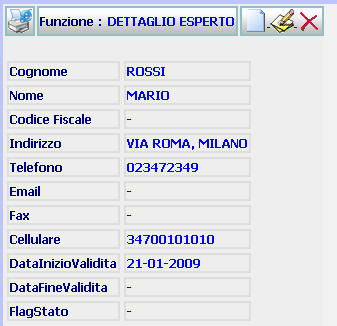
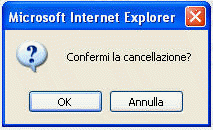

GENERALITA'
DETTAGLIO ESPERTO: La funzione, consente di visualizzare i dati di dettaglio di un Esperto in carico all'ufficio ed effettuare su di esso alcune operazioni.
LE MASCHERE VIDEO
La funzione in esame viene realizzata attraverso l'utilizzo della seguente maschera che riporta gli elementi descrittivi e operativi dei dati dell'Esperto:

COME FARE PER ...
| Per iscrivere un nuovo Esperto, l'utente deve: |
Cliccare sul pulsante
 ; si aprirà la maschera di
inserimento esperto
che permette di iscrivere un nuovo Esperto.
; si aprirà la maschera di
inserimento esperto
che permette di iscrivere un nuovo Esperto.
| Per modificare i dati inseriti relativi all'Esperto, l'utente deve: |
Cliccare sul pulsante
 ;
si aprirà la maschera
modifica esperto che permette di
effettuare le modifiche volute.
;
si aprirà la maschera
modifica esperto che permette di
effettuare le modifiche volute.
| Per cancellare l'Esperto e tutti i dati relativi l'utente deve: |
Cliccare sul pulsante
 ;
verrà visualizzato il seguente messaggio:
;
verrà visualizzato il seguente messaggio:

a) Cliccando sul pulsante si annullerà l'operazione di cancellazione e si ritornerà alla pagina di dettaglio
b) Cliccando sul pulsante
 il sistema cancellerà il nominativo dall'elenco
Esperti
il sistema cancellerà il nominativo dall'elenco
Esperti
N.B. Non è possibile effettuare l'operazione di cancellazione dell'Esperto nel caso in cui lo stesso risulti assegnatario di almeno un procedimento Sius
CAMPI
Nella maschera non sono presenti campi digitabili.
PULSANTI
Sono presenti i pulsanti
 ,
,
,
che fanno parte del gruppo di
pulsanti di "Uso Comune"
,
,
,
che fanno parte del gruppo di
pulsanti di "Uso Comune"
BOTTONI
Oltre ai comandi funzionali relativi al menù verticale non sono presenti altri comandi